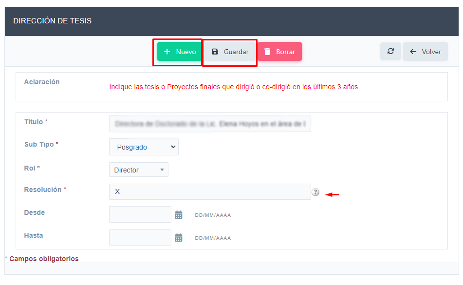

Ingrese al Ítem de Menú Actividades Tesis
Se visualiza la siguiente interfaz, en la que podrá ver las direcciones de tesis que tiene registradas.
Para visualizar o editar una actividad debe hacer clic en el icono de editar, de la actividad en cuestión. También haciendo clic en el Botón Nuevo puede agregar una nueva actividad
Actualice la información necesaria. En el campo Resolución tenga presente respetar la nomenclatura en caso de tratarse de una resolución de la Universidad.
Finalmente, en caso de realizar modificantes hacer clic en el Botón Guardar, si solo quería revisar la información, puede usar el Botón Regresar, para volver a la interfaz anterior, o bien si lo que quiere es agregar una nueva gestión puede hacer clic en el Botón Nuevo